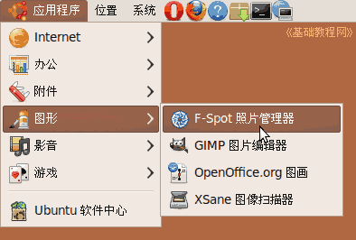
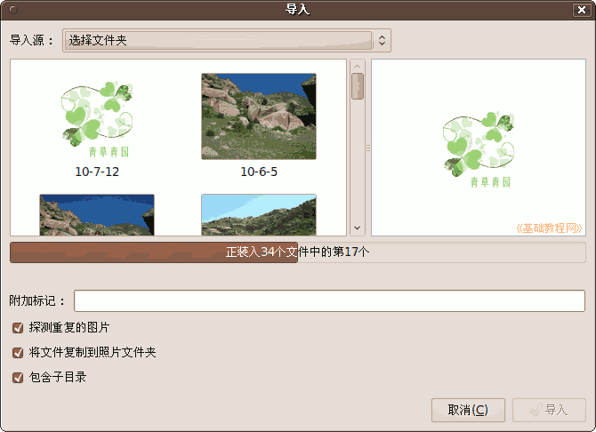
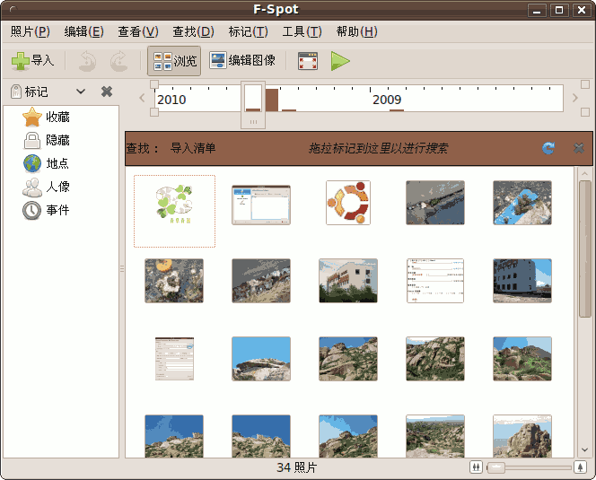
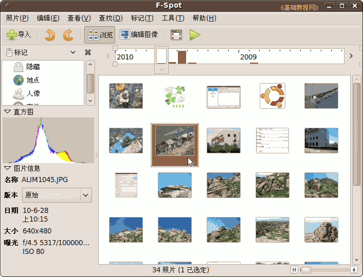
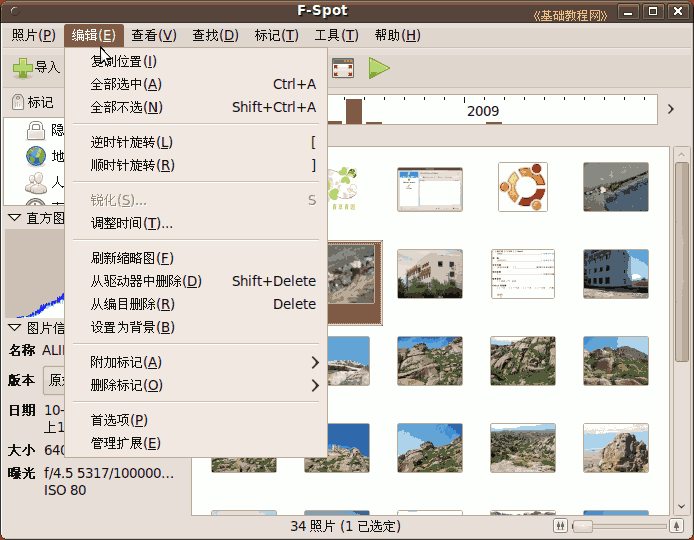
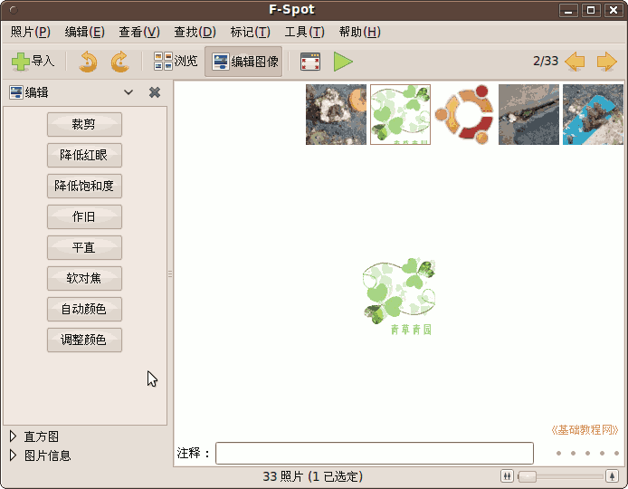
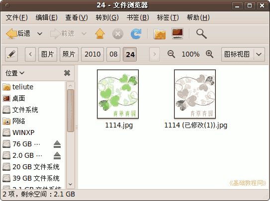
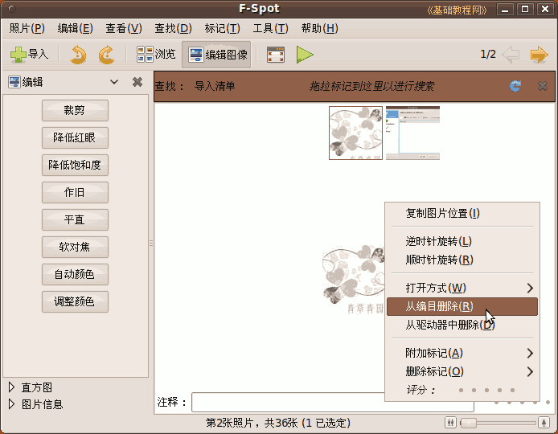
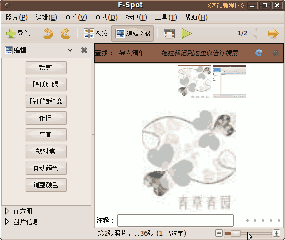

Ubuntu/GNOME 桌面程序指南
作者：TeliuTe 来源：基础教程网
七十五、F-Spot 照片管理器 返回目录 下一课使用它，您可以管理数码相机的照片，和本机中的图片文件；
1、F-Spot 照片管理器
1）点菜单“应用程序 - 图形 - F-Spot 照片管理器”，打开窗口；

2）接上数码相机后，就会出来一个询问，点使用F-Spot 后出来导入对话框；
以后也可以点“导入 - 选择文件夹 - 选择文件夹” 两次，打开选择对话框

3）点“导入”后，进入主窗口，左侧是位置和图片信息，右侧是图片缩略图，导入的照片复制在主文件夹的“图片 - 照片”文件夹中；

4）选中一幅图片后，在侧栏中可以查看图片信息；

5）点“编辑”菜单，可以使用一些常用编辑功能；

6）点工具栏中的“编辑图像”按钮，切换到编辑模式，在侧栏中可以进行剪裁、修复、调整等操作，可以折叠下面两个按钮；

7）编辑后的照片会创建一个快照版本，保存在相同文件夹中，文件名后面加上(已修改1)；

8）在图片上点右键，可以选择从目录中删除和从磁盘中删除；

9）窗口右下角有一个缩放标尺，可以放大图片，按数字 1 放大到原始大小；

本节学习了F-Spot 照片管理器的基础知识，如果你成功地完成了练习，请继续学习下一课内容；
本教程由86团学校TeliuTe制作|著作权所有
基础教程网：http://teliute.org/
美丽的校园……
转载和引用本站内容，请保留版权信息和本站链接。